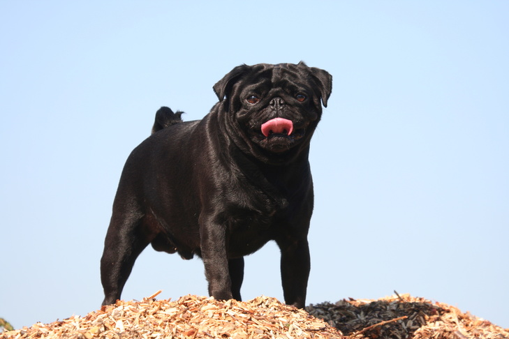
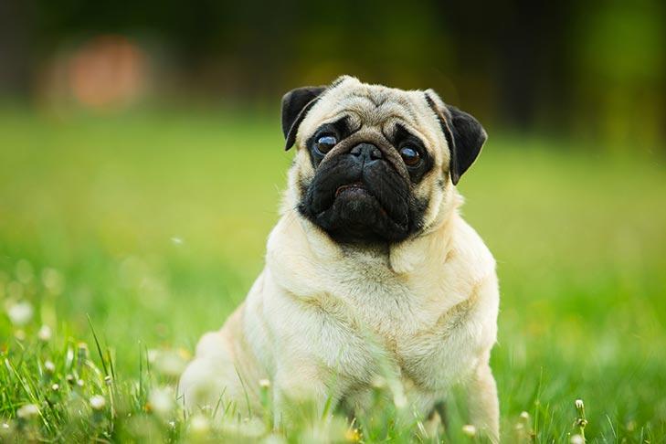
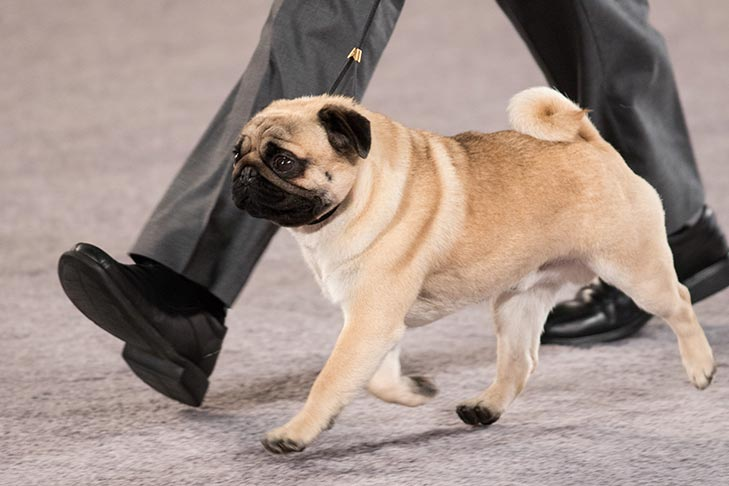

Buddhist Monks Kept Them as Pets
The earliest records of the Pug come from China, where Pugs were pets in Tibetan Buddhist monasteries. We know that Pugs have existed since at least 400 B.C., making them one of the oldest dog breeds.

They Were Bred to Be Lap Dogs
The original purpose of Pugs was to serve as lap dogs for Chinese emperors. This is why Pugs may not need as much exercise as other breeds.
Their Face Wrinkles Are a Badge Of Honor
Pugs have wrinkled faces because Chinese breeders purposely bred them that way. They actually aimed to create a pattern of wrinkles on the dogs’ foreheads, which resembled the Chinese character for “prince.”
Their Name Probably Comes From Their Facial Expression
The most popular theory about the breed’s name is that it came from marmoset monkeys, which were also known as Pug monkeys. Marmosets were popular pets in the early 1700s, and their faces look very similar to the faces of Pug dogs.
One Pug Saved His Royal Master’s Life
The first Prince William of Orange led the Dutch in a successful revolt against the Spaniards in the 1500s. Spanish soldiers attempted to assassinate William in Hermingny in 1572, but William’s Pug, “Pompey,” thwarted the attempt. The assassins attempted to sneak up to Prince William’s tent, but Pompey heard them and began barking. Because of Pompey’s heroism, the Pug became the official breed of the House of Orange.
Napoleon’s Wife Had a Feisty Pug
Napoleon’s wife, Josephine, had a loyal and protective pet Pug named “Fortune.” When Josephine was in prison during the Reign of Terror, before she and Napoleon were married, Fortune carried messages from the prison to Josephine’s first husband. Fortune is most famous for biting Napoleon on the couple’s wedding night after Josephine refused to exile her beloved dog from the marriage bed.

Many Other Famous People Have Owned Pugs
Pugs have been the dogs of choice for royals, historical figures, and modern-day celebrities. The British Queen Victoria loved Pugs. Harriet Beecher Stowe, author of “Uncle Tom’s Cabin,” had two pugs named “Punch” and “Missy.” Heavy metal singer Rob Zombie owned a Pug named “Dracula,” and famous Italian fashion designer Valentino had several pet Pugs that rode private jets and his private yacht. Other Pug-owning celebrities include Gerard Butler, Jessica Alba, Hugh Laurie, Tori Spelling, and Paris Hilton.
They Aren’t Related to Bulldogs
Pugs are sometimes called “Dutch Bulldogs,” but this is a bit of a misnomer. DNA testing has proven that Bulldogs and Pugs aren’t actually related. The Pug does have the same stocky shape, flat face, and wrinkles as the Bulldog, but Pugs share their origins with the Pekingese, not the Bulldog.

Pugs Were a Symbol of the Freemasons
After the Catholic Church forbid Catholics from becoming Freemasons, a group of Catholics decided to form a covert Freemason society called the Order of the Pug in 1740. They chose the Pug as their symbol because Pugs are loyal and trustworthy. To be initiated into the order, you had to wear a dog collar and scratch at the door.
A Group Of Pugs Is Called a “Grumble”
As if Pugs couldn’t possibly get more adorable, put them together and they make an adorable grumble.
Related article: Get to Know the Smallest Dog BreedsGet Your Free AKC eBook
Selecting a Puppy
How do you know what breed is right for your family? How do you find a reputable breeder? What questions should you ask a breeder? Download this e-book for guidance on these questions and other important factors to consider when looking for a puppy.